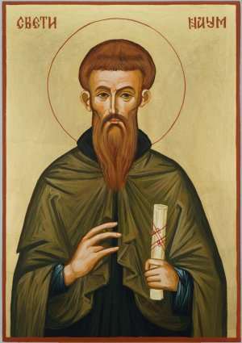

„Hoće li tko za mnom, neka se odreče samoga sebe, neka uzme svoj križ i neka ide za mnom.” (Mt 16,24)

Sveti Naum, rođen oko 830. godine u bugarskom dijelu Mezije, bio je jedan od najistaknutijih učenika i suradnika svetih Ćirila i Metoda, te ključna figura u širenju kršćanstva i slavenske pismenosti na Balkanu. Nakon što je zajedno sa svojim učiteljima i svetim Klementom Ohridskim poslan u Veliku Moravsku kako bi propovijedao Evanđelje na slavenskom jeziku, Naum je postao jedan od prvih svećenika koji su služili na staroslavenskom jeziku, koristeći glagoljicu koju su Ćiril i Metod razvili. Njegov rad bio je presudan u prevođenju liturgijskih tekstova i Svetog pisma, čime je omogućio da vjera postane dostupna običnom narodu.
Nakon što su protjerani iz Velike Moravske, Naum je zajedno s Klementom i drugim učenicima našao utočište u Bugarskoj, gdje je bugarski car Boris I. srdačno prihvatio njihovu misiju. Naum je postao jedan od osnivača Ohridske književne škole, koja je postala središte slavenske pismenosti i kulture. Njegov rad na prepisivanju i širenju rukopisa imao je neprocjenjiv utjecaj na razvoj slavenskih jezika i književnosti, te na širenje kršćanstva među slavenskim narodima. Naum je također bio poznat kao izvrstan propovjednik i duhovni vođa, te su ga mnogi smatrali čudotvorcem. Njegov grob u manastiru Svetog Nauma kod Ohridskog jezera postao je mjesto hodočašća, a i danas ga mnogi vjernici posjećuju tražeći utjehu i zagovor.
Sveti Naum preminuo je 23. prosinca 910. godine i pokopan je u crkvi koju je sam podigao uz obalu Ohridskog jezera. Njegov grob postao je jedno od najvažnijih hodočasničkih mjesta na Balkanu, a mnogi vjernici i danas dolaze moliti se za zdravlje i utjehu. Crkva Svetog Nauma, koja nosi njegovo ime, i danas je aktivni manastir i jedno od najljepših svetišta u Sjevernoj Makedoniji, svjedočeći o trajnom nasljeđu ovog velikog sveca i učitelja.